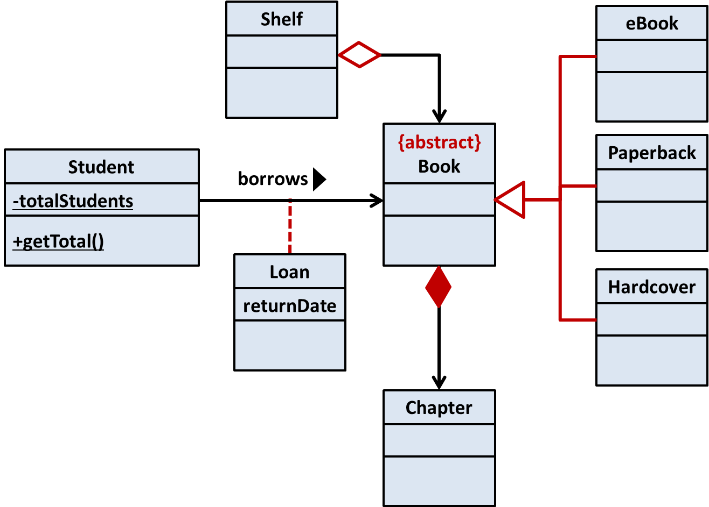

Lecture 4: More OOP, and requirements
L3 recap
[Slides]
Part 1 - Object-Oriented Programming: Intermediate Concepts
|  |
Overview: Inheritance is a powerful OO features that can be beneficial in certain design contexts. There are a few other nitty-gritties an OO guy should know such as class-level members. Sequence diagrams can be used to depict interactions between objects. Topics: Composition, Association classes, Inheritance, Interfaces, Interface Segregation Principle. |
Resources:
- [Optional reading] Object-Oriented Programming with Objective-C, by Apple Inc. If you liked the first part of this document you read so far (this was given as a resource in the previous lecture), you may continue to read the remainder to strengthen your understanding of OOP.
Part 2 - Problem before solution: figuring out requirements

|
Overview: There are many ways to gather, analyze and document requirements. Topics: establishing requirements, specifying requirements |
Side readings: